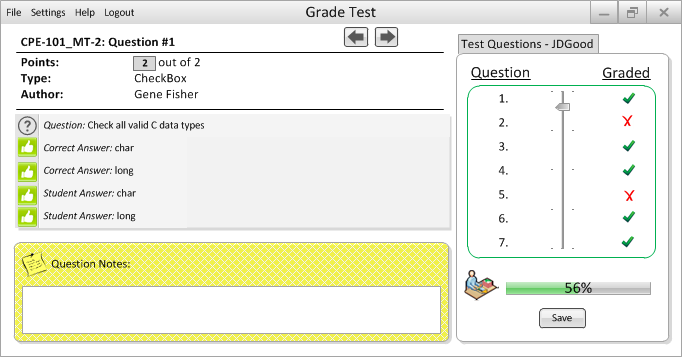
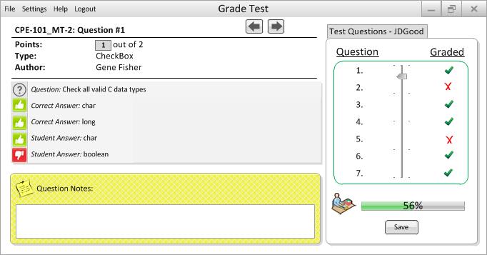

This is the professor's home screen when trying to grade a Check Box question.
- Auto Grading: The program will compare the student's checked answer(s) to the one(s) specified as the "Answer" by the author of the question, in Figure 2.2.2.1.2, to generate a score.
- Manual Grading: After evaulating the question and the student's answer(s), the professor can leave a note for the student and edit the point-value field by clicking on the grey box in order to input a score.

